HomeStory Sacramento
A dedicated before-and-after section makes the change easy to see.
Checked November 9, 2026 • Public information only
This review covers the Sacramento dealer page, Rocklin and Sacramento city pages, the local Google profile, selected Meta ads and public social pages. Screenshots show what was visible during this check. They are not proof of lost sales, weak ad results or search penalties.
| Check | Result and limit |
|---|---|
| Page speed | One mobile lab run scored 54/100, with a largest-content load time (LCP) of 17.0 seconds on a simulated slow connection. Desktop scored 72, with LCP 1.8 seconds. The wider website’s real-user data passed Google’s Core Web Vitals checks. Page-specific real-user data was not available. Scores can change between runs. |
| Page and link crawl | A sample of 73 first-party links from the reviewed pages ended in a successful 200 response. This was a sample, not a full-site crawl or a test of every rendered feature. No broken-page claim is made. |
| Search setup | The robots file allowed crawling and linked a valid sitemap index with six child maps. These files help search engines find pages. The dealer page had a title, description and canonical URL. This does not prove every page is indexed. |
| Local search | We reviewed the named Google business profile and the two city pages. No location-by-location rank grid or verified keyword positions were available. We make no claim about where this business ranks or whether competitors rank higher. |
| Google profile | The public profile showed 4.9 stars from 282 reviews. The site’s map label and Saturday hours did not agree with the local business details. See the paired screenshots in the screenshot record below. |
| Consultation path | The form opened and showed contact and project fields. We did not send a test lead, book a visit or measure staff response time. We did not call the business. |
| Tracking and pixel | The page source included Google Tag Manager and CallRail references. That only shows code is present. Meta Pixel firing, event quality, consent behavior, server-side events and lead attribution were not verified. No account access or test conversion was used. |
| Meta ads | The selected Sacramento advertiser showed about eight active US results. Several shared Fall sale copy; two visible examples used a process-led message. This is a snapshot of one advertiser page, not the whole national brand. Spend, audience, cost per lead and sales results were unavailable. |
| Social | The public Instagram profile @onedaysacramento showed 566 followers and local door/closet messaging. We did not measure reach, engagement quality or posting consistency. A small follower count alone is not a performance problem. |
| Competitors | Two nearby door/closet brands were reviewed for useful page and content ideas. Their websites do not prove better rankings, leads or sales. We have not copied their claims or creative. |
Tap a screenshot for the original view. Google screenshots are cropped to the public business panel to keep unrelated account UI out of this report.
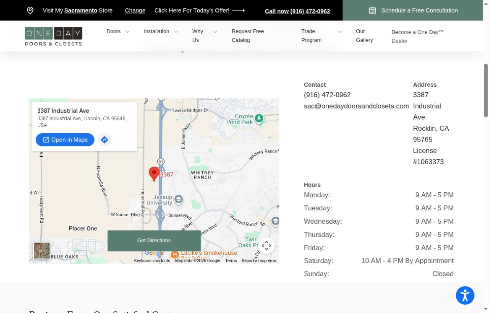
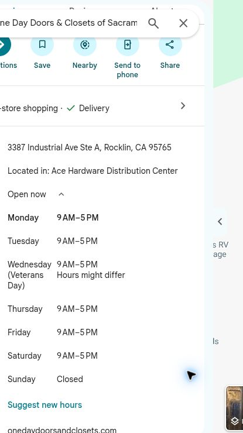
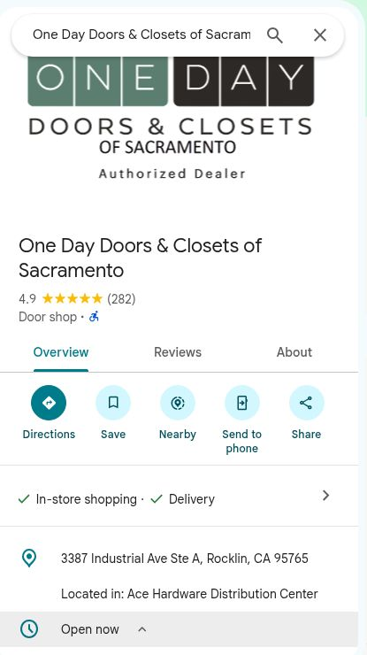
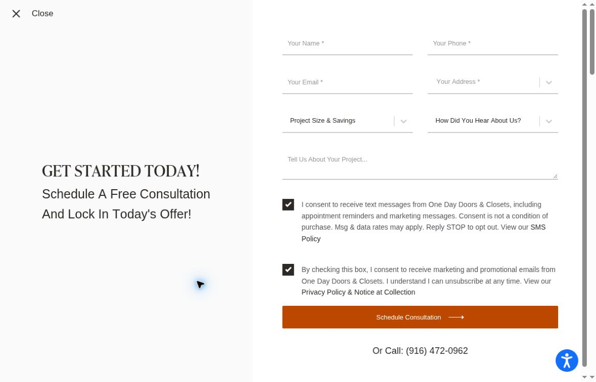
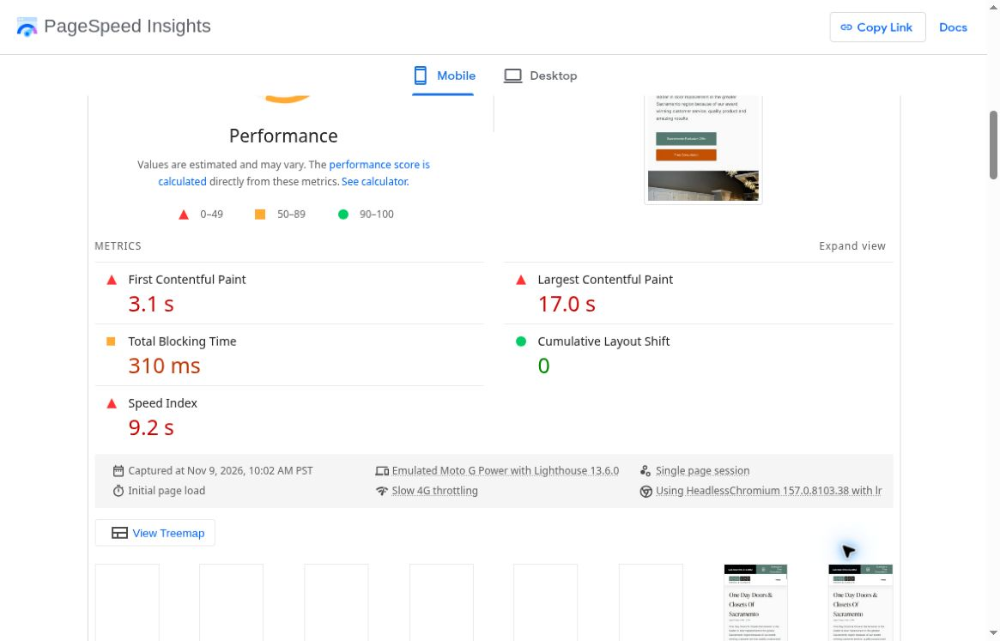
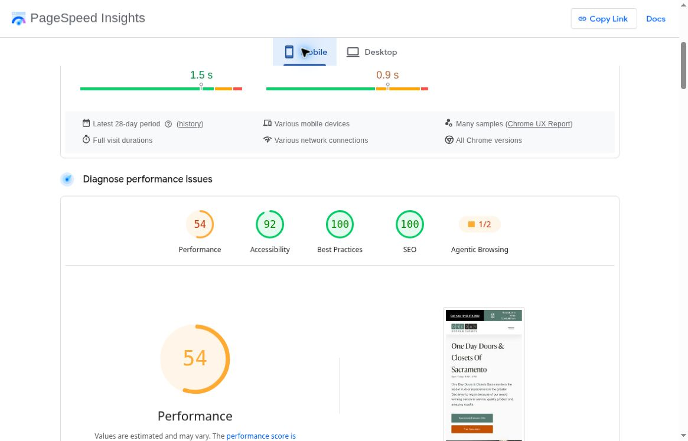
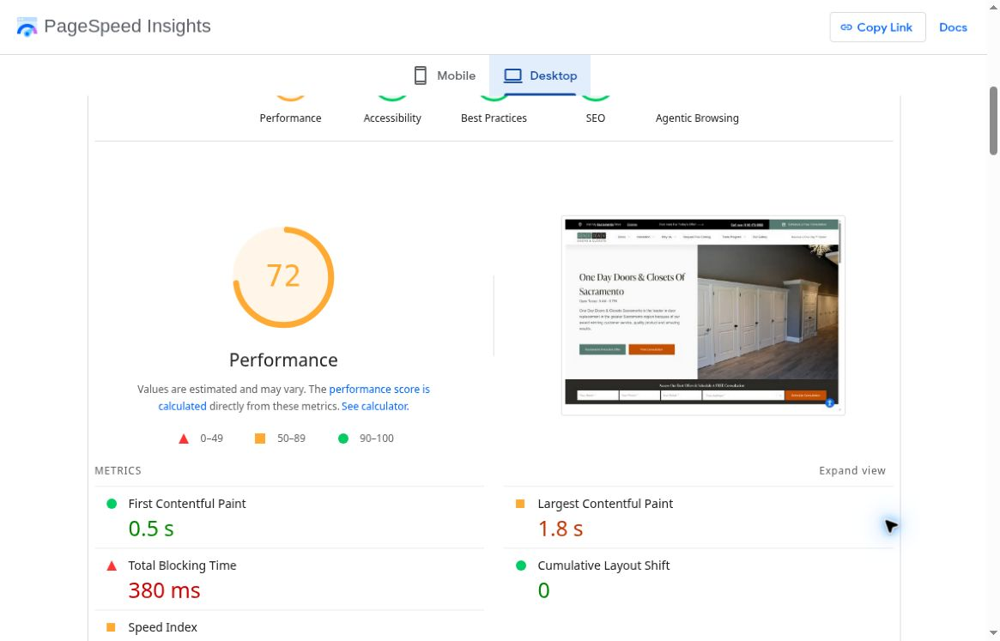
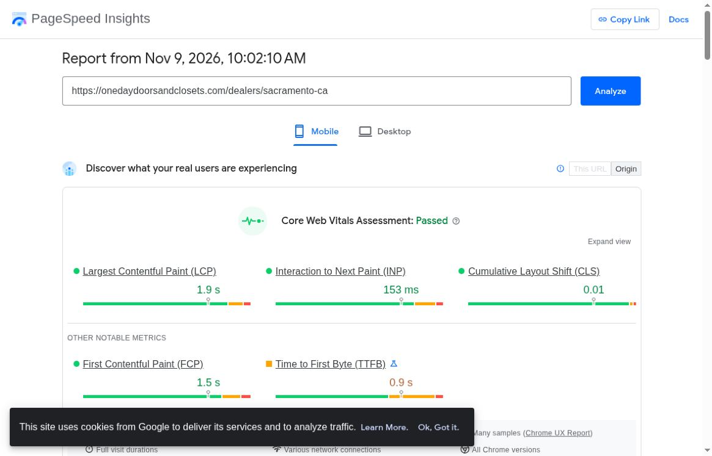
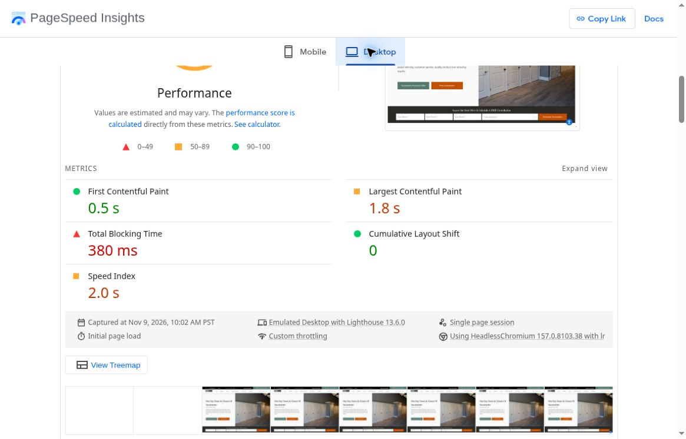
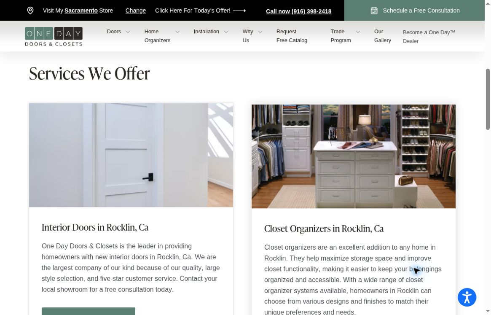
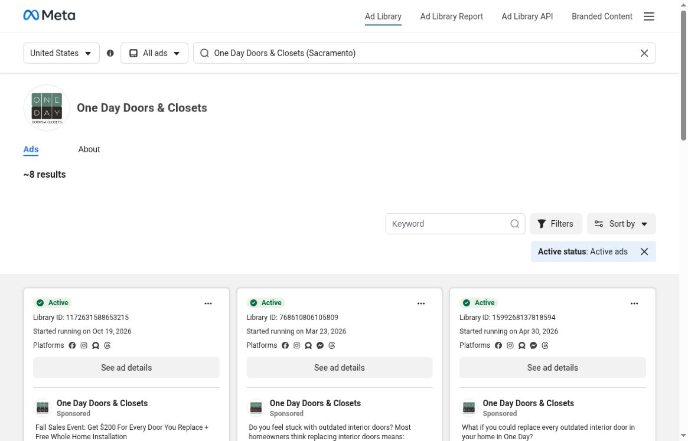
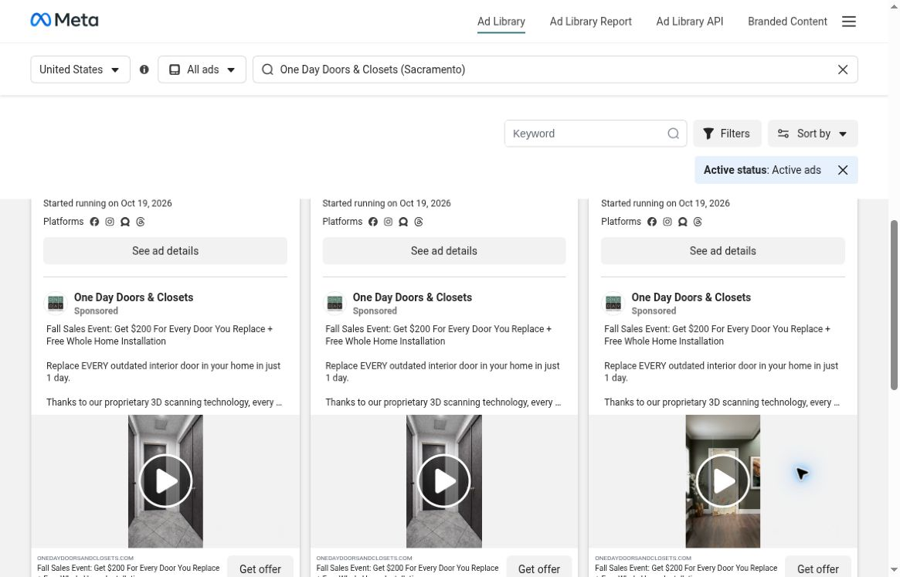
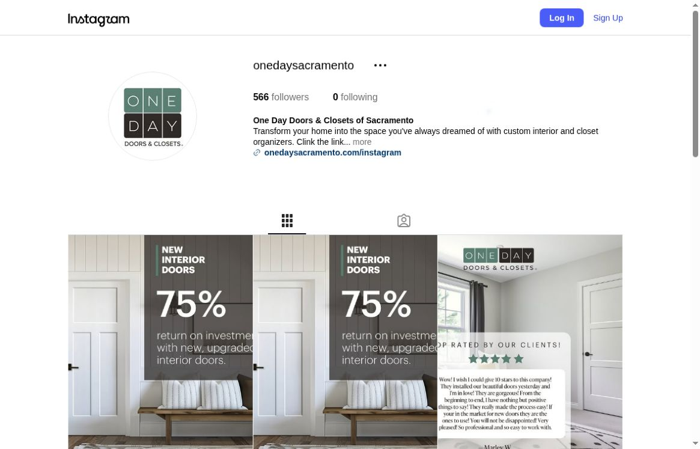
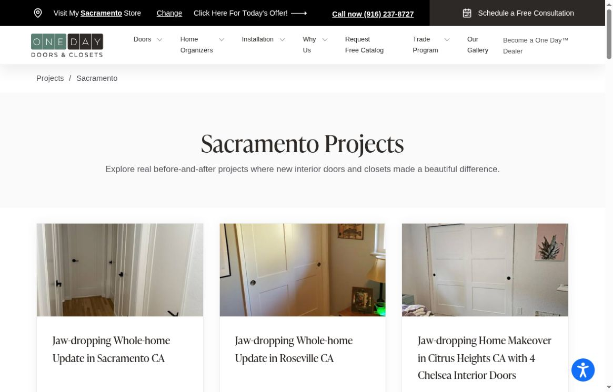
Ideas to consider, not a ranking or performance comparison.
A dedicated before-and-after section makes the change easy to see.
The four-step process explains consult, design, prepare and install.
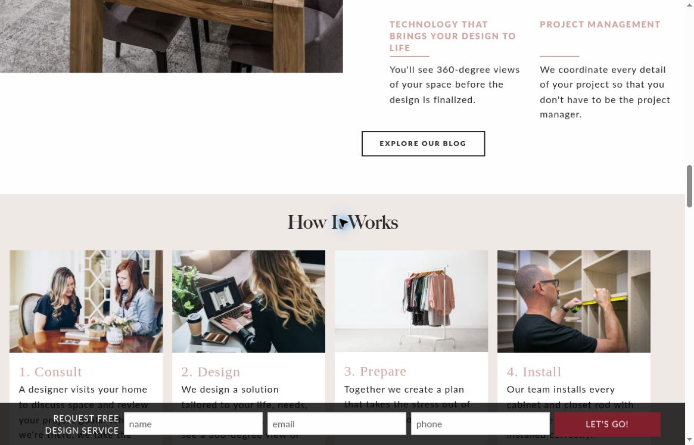
First confirm the true address pin, Saturday hours and reply-time promise with the local team. Then test speed fixes and a local project story. Any work in business accounts, tracking changes, customer filming or ad spending needs the right access and approval.